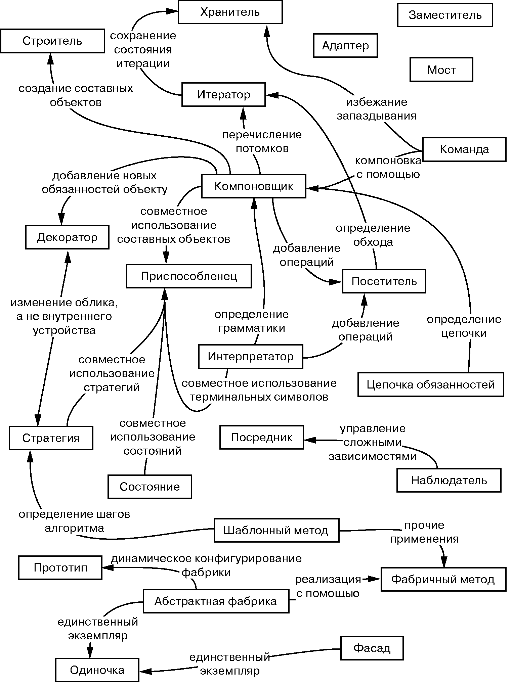

Задание 1. Написать в отчет о практической работе небольшой авторский реферат о паттернах проектирования
ВНИМАНИЕ! ДАННАЯ ГЛАВА НАХОДИТСЯ В РАЗРАБОТКЕ!
Задание 1. Написать в отчет о практической работе небольшой авторский реферат о паттернах проектирования:
Описать структуры паттернов:
-
Порождающие паттерны — паттерны, которые абстрагируют процесс инстанцирования или, иными словами, процесс порождения классов и объектов. Среди них выделяются следующие: Абстрактная фабрика (Abstract Factory), Строитель (Builder), Фабричный метод (Factory Method), Прототип (Prototype), Одиночка (Singleton)
-
Структурные паттерны - рассматривают, как классы и объекты образуют более крупные структуры - более сложные по характеру классы и объекты. К таким шаблонам относятся: Адаптер (Adapter), Мост (Bridge), Компоновщик (Composite), Декоратор (Decorator), Фасад (Facade), Приспособленец (Flyweight), Заместитель (Proxy)
-
Поведенческие паттерны - определяют алгоритмы и взаимодействие между классами и объектами, то есть их поведение. Среди подобных шаблонов можно выделить следующие: Цепочка обязанностей (Chain of responsibility), Команда (Command), Интерпретатор (Interpreter), Итератор (Iterator), Посредник (Mediator), Хранитель (Memento), Наблюдатель (Observer), Состояние (State), Стратегия (Strategy), Шаблонный метод (Template method), Посетитель (Visitor).
Включить в реферат различные точки зрения на использование паттернов, изученные вами на специализированных сайтах и форумах.
Более подробно о паттернах
Более подробно о паттернах можно почитать тут или в книге банды четырёх
Некоторые полезные фразы и материалы для реферата:
Из введения книги банды четырёх
Паттерны появились потому, что многие разработчики искали пути повышения гибкости и степени повторного использования своих программ1.
Использование паттернов при разработке программных систем позволяет проектировщику перейти на более высокий уровень разработки проекта. Теперь архитектор и программист могут оперировать образными названиями паттернов и общаться на одном языке1.
Прежде всего, опытный разработчик понимает, что не нужно решать каждую новую задачу с нуля. Вместо этого он старается повторно воспользоваться теми решениями, которые оказались удачными в прошлом. Отыскав хорошее решение один раз, он будет прибегать к нему снова и снова. Именно благодаря накопленному опыту проектировщик и становится экспертом в своей области. Во многих объектно-ориентированных системах встречаются повторяющиеся паттерны, состоящие из классов и взаимодействующих объектов. С их помощью решаются конкретные задачи проектирования, в результате чего объектно-ориентированная архитектура становится более гибкой, элегантной, и может использоваться повторно. Проектировщик, знакомый с паттернами, может сразу же применять их к решению новой задачи, не пытаясь каждый раз изобретать велосипед1.
Если вы знаете паттерн, многие проектировочные решения далее следуют автоматически1.
Паттерны проектирования упрощают повторное использование удачных проектных и архитектурных решений. Представление прошедших проверку временем методик в виде паттернов проектирования делает их более доступными для разработчиков новых систем. Паттерны проектирования помогают выбрать альтернативные решения, упрощающие повторное использование системы, и избежать тех альтернатив, которые его затрудняют. Паттерны улучшают качество документации и сопровождения существующих систем, поскольку они позволяют явно описать взаимодействия классов и объектов, а также причины, по которым система была построена так, а не иначе. Проще говоря, паттерны проектирования дают разработчику возможность быстрее найти правильный путь1.
Где-то в книге банды четырёх
Некоторые паттерны часто используются вместе. Например, компоновщик применяется с итератором или посетителем. Некоторыми паттернами предлагаются альтернативные решения. Так, прототип нередко можно использовать вместо абстрактной фабрики. Применение части паттернов приводит к схожему дизайну, хотя изначально их назначение различно. Например, структурные диаграммы компоновщика и декоратора похожи1.
Если при проектировании системы не принималась во внимание возможность изменений, то есть вероятность, что в будущем ее придется полностью перепроектировать. Это может повлечь за собой переопределение и новую реализацию классов, модификацию клиентов и повторный цикл тестирования. Перепроектирование отражается на многих частях системы, поэтому непредвиденные изменения всегда оказываются дорогостоящими. Благодаря паттернам систему всегда можно модифицировать определенным образом1.
Паттерны помогают адаптировать архитектуру каркаса ко многим приложениям без повторного проектирования1.
Каждый паттерн позволяет изменять некоторый аспект системы независимо от всех прочих, таким образом, она менее подвержена влиянию изменений конкретного вида1.
Никакое обсуждение применения паттернов проектирования нельзя считать полным, если не сказать о том, как не надо их применять. Паттерны не должны применяться без разбора. Нередко за гибкость и простоту изменения, которые дают паттерны, приходится платить усложнением дизайна и/или ухудшением производительности. Паттерн проектирования стоит применять, только когда дополнительная гибкость действительно необходима1.
Паттерны для каркасов приложения
Каркас диктует определенную архитектуру приложения. Он определяет общую структуру, ее разделение на классы и объекты, ключевые обязанности тех и других, методы взаимодействия объектов и классов и потоки управления. Данные параметры проектирования задаются каркасом, а проектировщики или разработчики приложений могут сконцентрироваться на специфике приложения. В каркасе отражены проектные решения, общие для данной предметной области. Акцент в каркасе делается на повторном использовании дизайна, а не кода, хотя обычно он включает и конкретные подклассы, которые можно применять непосредственно1.
Тот, кто знает паттерны, способен быстрее разобраться в тонкостях каркаса. Но даже не работающие с паттернами увидят их преимущества, поскольку паттерны помогают удобно структурировать документацию по каркасу. Повышение качества документирования важно для любых программных продуктов, но для каркасов этот аспект важен вдвойне. Для освоения работы с каркасами надо потратить немало усилий, и только после этого они начнут приносить реальную пользу. Паттерны могут существенно упростить задачу, явно выделяя ключевые элементы дизайна каркаса1.
Отношения между паттернами проектирования

Паттерны проектирования помогают выявить не вполне очевидные абстракции и объекты, которые могут их использовать. Например, объектов, представляющих процесс или алгоритм, в действительности нет, но они являются неотъемлемыми составляющими гибкого дизайна. Паттерн стратегия (362) описывает способ реализации взаимозаменяемых семейств алгоритмов. Паттерн состояние (352) представляет состояние некоторой сущности в виде объекта. Эти объекты редко возникают во время анализа и даже на ранних стадиях проектирования. Они появляются позднее, при попытках сделать дизайн более гибким и пригодным для повторного использования1.
Причины перепроектирования системы (по сути, антипаттерны):
-
При создании объекта явно указывается класс. Задание имени класса привязывает вас к конкретной реализации, а не к конкретному интерфейсу. Это может осложнить изменение объекта в будущем. Чтобы уйти от такой проблемы, создавайте объекты косвенно. Паттерны проектирования: абстрактная фабрика (113), фабричный метод (135), прототип (146)1.
-
Зависимость от конкретных операций. Задавая конкретную операцию, вы ограничиваете себя единственным способом выполнения запроса. Если же не включать запросы в код, то будет проще изменить способ удовлетворения запроса как на этапе компиляции, так и на этапе выполнения. Паттерны проектирования: цепочка обязанностей (263), команда (275)1.
-
Зависимость от аппаратной и программной платформ. Внешние интерфейсы операционной системы и интерфейсы прикладных программ (API) различны на разных программных и аппаратных платформах. Если программа зависит от конкретной платформы, ее будет труднее перенести на другие. Возможно, даже на «родной» платформе такую программу трудно поддерживать. Поэтому при проектировании систем так важно ограничивать платформенные зависимости. Паттерны проектирования: абстрактная фабрика (113), мост (184)1.
-
Зависимость от представления или реализации объекта. Если клиент располагает информацией о том, как объект представлен, хранится или реализован, то, возможно, при изменении объекта придется изменять и клиента. Сокрытие этой информации от клиентов поможет уберечься от каскадных изменений. Паттерны проектирования: абстрактная фабрика (113), мост (184), хранитель (330), заместитель (246)1.
-
Зависимость от алгоритмов. Во время разработки и последующего использования алгоритмы часто расширяются, оптимизируются и заменяются. Зависящие от алгоритмов объекты придется переписывать при каждом изменении алгоритма. Поэтому алгоритмы, которые с большой вероятностью будут изменяться, следует изолировать. Паттерны проектирования: мост (184), итератор (302), стратегия (362), шаблонный метод (373), посетитель (379)1.
-
сильная связанность. Сильно связанные между собой классы трудно использовать порознь, так как они зависят друг от друга. Сильная связанность приводит к появлению монолитных систем, в которых нельзя ни изменить, ни удалить класс без знания деталей и модификации других классов. Такую систему трудно изучать, переносить на другие платформы и сопровождать1.
Слабая связанность повышает вероятность того, что класс можно будет повторно использовать сам по себе. При этом изучение, перенос, модификация и сопровождение системы намного упрощаются. Для поддержки слабосвязанных систем в паттернах проектирования применяются такие методы, как абстрактные связи и разбиение на слои. Паттерны проектирования: абстрактная фабрика (113), мост (184), цепочка обязанностей (263), команда (275), фасад (221), посредник (319), наблюдатель (339)1.
-
расширение функциональности за счет порождения подклассов. Специализация объекта путем создания подкласса часто оказывается непростым делом. С каждым новым подклассом связаны фиксированные издержки реализации (инициализация, очистка и т. д.). Для определения подкласса необходимо так же ясно представлять себе устройство родительского класса. Например, замещение одной операции может потребовать замещения и других. Замещение операции может оказаться необходимым для того, чтобы можно было вызвать унаследованную операцию. Кроме того, порождение подклассов ведет к разрастанию количества классов, поскольку даже для реализации простого расширения приходится создавать новые подклассы. Композиция объектов и делегирование — гибкие альтернативы наследованию для комбинирования поведений. Приложению можно добавить новую функциональность, меняя способ композиции объектов, а не определяя новые подклассы уже имеющихся классов. С другой стороны, интенсивное использование композиции объектов может усложнить понимание кода. С помощью многих паттернов проектирования удается построить такое решение, где специализация достигается за счет определения одного подкласса и комбинирования его экземпляров с уже существующими. Паттерны проектирования: мост (184), цепочка обязанностей (263), компоновщик (196), декоратор (209), наблюдатель (339), стратегия (362)1.
-
неудобства при изменении классов. Иногда нужно модифицировать класс, но делать это неудобно. Допустим, вам нужен исходный код, а он недоступен (так обстоит дело с коммерческими библиотеками классов). Или любое изменение тянет за собой модификации множества существующих подклассов. Благодаря паттернам проектирования можно модифицировать классы и при таких условиях. Паттерны проектирования: адаптер (171), декоратор (209), посетитель (379)1.
Приложения
Если вы проектируете приложения — например, редактор документов или электронную таблицу, — то наивысший приоритет имеют внутреннее повторное использование, удобство сопровождения и расширяемость. Первое подразумевает, что вы не проектируете и не реализуете больше, чем необходимо. Повысить степень внутреннего повторного использования помогут паттерны, уменьшающие число зависимостей. Ослабление связанности увеличивает вероятность того, что некоторый класс объектов сможет взаимодействовать с другими. Например, устраняя зависимости от конкретных операций путем изолирования и инкапсуляции каждой операции, вы упрощаете задачу повторного использования любой операции в другом контексте. К тому же результату приводит устранение зависимостей от алгоритма и представления1.
Паттерны проектирования также упрощают сопровождение приложения, если использовать их для ограничения платформенных зависимостей и разбиения системы на уровни. Они способствуют и наращиванию функциональности системы, показывая, как расширять иерархии классов и когда следует применять композицию объектов. Уменьшение степени связанности также увеличивает возможность развития системы. Расширение класса становится проще, если он не зависит от множества других1.
Аспекты дизайна, которые могут изменяться при применении паттернов проектирования
| Назначение | Паттерн проектирования | Переменные аспекты |
|---|---|---|
| Порождающие паттерны | Абстрактная фабрика (113) | Семейства порождаемых объектов |
| Одиночка (157) | Единственный экземпляр класса | |
| Прототип (146) | Класс, на основе которого создается объект | |
| Строитель (124) | Способ создания составного объекта | |
| Фабричный метод (135) | Подкласс создаваемого объекта | |
| Структурные паттерны | Адаптер (171) | Интерфейс к объекту |
| Декоратор (209) | Обязанности объекта без порождения подкласса | |
| Заместитель (246) | Способ доступа к объекту, его местоположение | |
| Компоновщик (196) | Структура и состав объекта | |
| Мост (184) | Реализация объекта | |
| Приспособленец (231) | Затраты на хранение объектов | |
| Фасад (221) | Интерфейс к подсистеме | |
| Паттерны поведения | Интерпретатор (287) | Грамматика и интерпретация языка |
| Итератор (302) | Способ перебора элементов агрегата | |
| Команда (275) | Время и способ выполнения запроса | |
| Наблюдатель (339) | Множество объектов, зависящих от другого объекта; способ, которым зависимые объекты поддерживают себя в актуальном состоянии | |
| Посетитель (379) | Операции, которые могут применяться к объекту или объектам, не меняя класса | |
| Посредник (319) | Взаимодействующие объекты и механизм их совместной работы | |
| Состояние (352) | Состояние объекта | |
| Стратегия (362) | Алгоритм | |
| Хранитель (330) | Закрытая информация, хранящаяся вне объекта, и время ее сохранения | |
| Цепочка обязанностей (263) | Объект, выполняющий запрос | |
| Шаблонный метод (373) | Шаги алгоритма |
Книга банды четырёх.